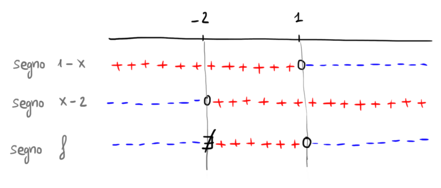

Nei quattro paragrafi precedenti è stato illustrato il concetto di dominio di una funzione,
ovvero l'insieme di valori per i quali è definita.
Trascinando il punto
nel seguente grafico interattivo è possibile
visualizzare
i valori assunti dalla funzione al variare della \(x\).
\[
f(\color{blue}{}-8\color{black}{}) = \color{red}{}2
\]
Provate a rispondere a queste tre domande:
-
Per quali valori di \(x\) la funzione assume segno positivo?
Ovvero, per quali \(x\) si ha \(f(x) \boldsymbol{\gt} 0\)?
-
Per quali valori di \(x\) la funzione assume segno negativo?
Ovvero, per quali \(x\) si ha \(f(x) \boldsymbol{\lt} 0\)?
-
Per quali valori di \(x\) la funzione vale \(\boldsymbol{0}\)?
Ovvero, per quali \(x\) si ha \(f(x) \boldsymbol{=} 0\)?
Consideriamo la funzione
\[
f(x) = \dfrac{1 -x}{2 +x}
\]
Dominio
Per individuare il dominio è sufficiente "mettere in sicurezza" l'unica operazione pericolosa che compare
nella definizione di \(f\), la frazione.
Il suo denominatore deve essere diverso da \(0\):
\[
2 + x \neq 0 \,\,\,\Longrightarrow\,\,\, x \neq -2
\]
Di conseguenza il dominio di \(f\) è
\[
D = \left(-\infty\,;\,\,-2\right) \cup \left(-2\,;\,\,+\infty\right)
\]
Studio del segno
Vogliamo determinare per quali valori della \(x\) la funzione
-
assume segno positivo
-
assume segno negativo
-
vale \(\boldsymbol{0}\)
Iniziamo dalla prima domanda. Chiediamoci perciò per quali valori di \(x\) si ha \(f(x) \gt 0\), ovvero:
\[
\dfrac{1 -x}{2 +x} \gt 0
\]
Analizziamo come varia il segno del numeratore al variare della \(x\).
\[
\begin{align*}
1 -x \gt 0 \,\,\,&\Longrightarrow\,\,\, -x \gt -1
\\\\
&\Longrightarrow x \lt 1
\end{align*}
\]
Analizziamo il segno del denominatore.
\[
2 + x \gt 0 \,\,\,\Longrightarrow\,\,\, x \gt -2
\]
Inseriamo le informazioni ottenute nel grafico dei segni:

Da questo grafico leggiamo come varia il segno di \(f\) al variare del valore assunto dalla \(x\).
Possiamo quindi rispondere alle tre domande iniziali:
-
la funzione è positiva se \(x \in \left(-2\,;\,\,1\right)\)
-
la funzione è negativa se \(x \in \left(-\infty\,;\,\,-2\right) \cup \left(1\,;\,\,+\infty\right)\)
-
la funzione vale \(\boldsymbol{0}\) se \(x = 1\)